CREDIT FIRST NATIONAL ASSOCIATION
MOBILE APP
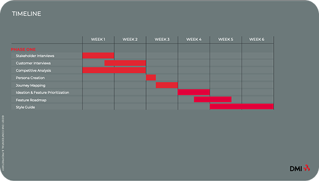
INTRODUCTION
CFNA, a Bridgestone company based in Cleveland, Ohio, specializes in automotive tire and service financing for individuals and businesses. When they came to DMI, they had a clear goal: build their first mobile app experience for their credit card holders.
I was brought in as UX Lead for a 6-week discovery phase, followed by a design and development phase. What I didn't expect was how much the project would test my ability to adapt, lead, and deliver under pressure.
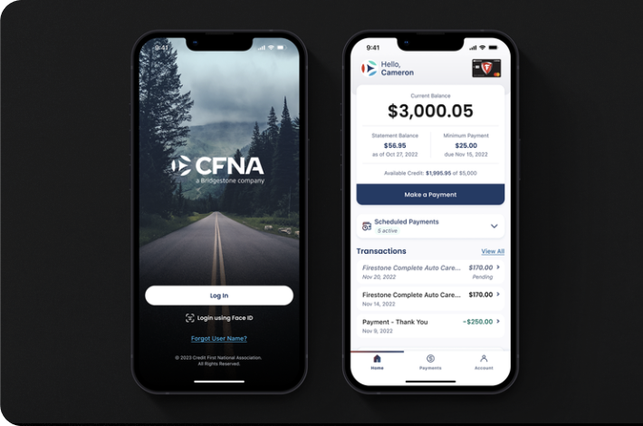
EXECUTIVE SUMMARY
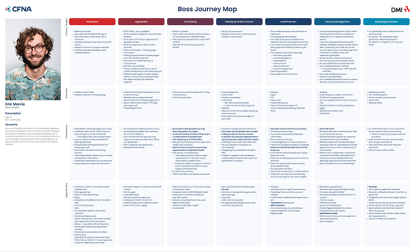
This was a short but demanding engagement that required me to move quickly, think strategically, and wear more than one hat. From competitive research and journey mapping to wireframing an entire mobile app MVP in a single week, this project pushed my skills across every dimension.
I led discovery, defined the MVP feature set, surfaced critical risks that could have derailed the entire timeline, and stepped into a dual UX Lead and PM role during a critical team transition, all without disrupting the client relationship or delivery momentum.
Core Disciplines: UX Strategy, Competitive Analysis, Heuristic Evaluation, Journey Mapping, Stakeholder Workshops, Wireframing, iOS and Android Design, ADA Compliance, Program Management
LEARN
Stakeholder Interviews & Secondary Research
The engagement kicked off with a stakeholder meeting that outlined the scope, deliverables, and timeline. From there we moved into stakeholder interviews to get a deeper understanding of the business and its users.
Although we were unable to conduct primary user research due to CFNA's budget and time constraints, we were given access to existing research on their target market. That research painted a clear picture of two distinct user types: users who genuinely needed financing to afford repairs, and users who could afford repairs but were shopping for the best combination of price and service. Understanding both types was critical to shaping an experience that served their different motivations.
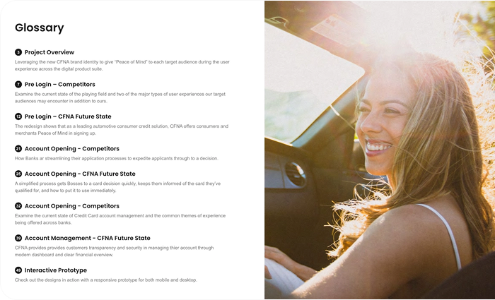
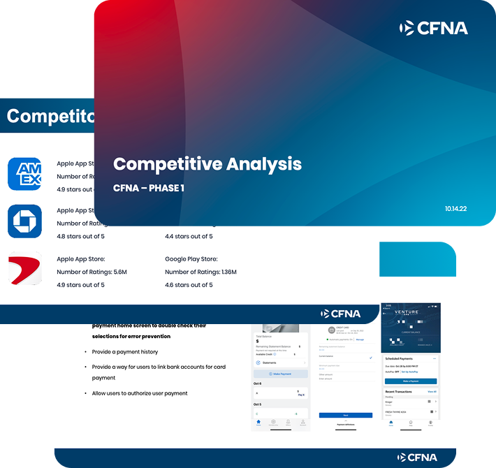
Competitive Analysis
Without access to CFNA's own users for primary research, a robust competitive analysis became one of our most valuable research tools. I conducted a thorough evaluation of competing products and delivered an 87-page research presentation packed with actionable insights to inform the product roadmap and identify opportunities for differentiation.
BUILD
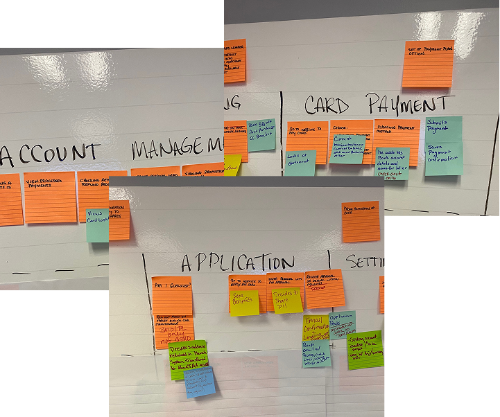
Onsite Workshop
In week four we traveled to CFNA's offices for a two-day workshop covering marketing approach, branding, journey mapping, and a MoSCoW prioritization exercise. I led the journey mapping and prioritization portions of the session.
The workshop was where we discovered one of the most significant risks of the entire engagement. Many of the APIs required to support the app's planned features were either unavailable or not yet developed, and a key internal stakeholder had not communicated the time and effort required to build them. This discovery fundamentally changed what the MVP needed to look like.
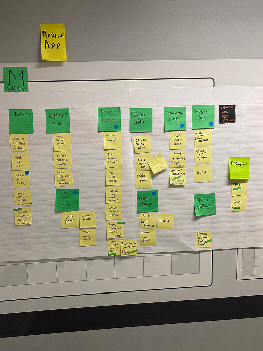
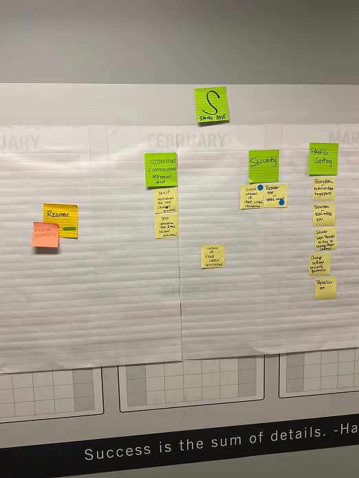
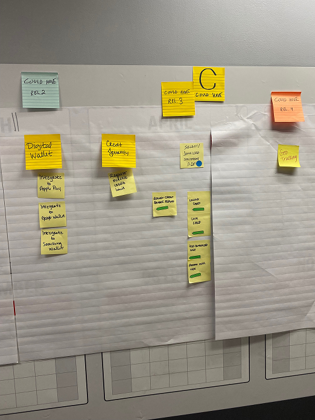
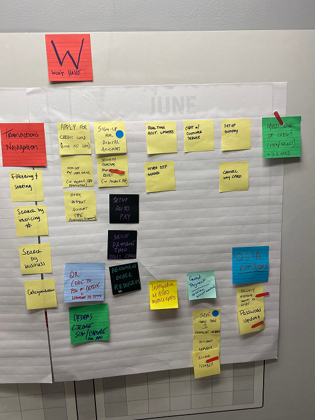
Designing MVP
After the workshop it was clear the app would launch with a tightly scoped MVP. I designed the entire mobile app for both iOS and Android in one week. Not because the timeline demanded shortcuts, but because the research and workshop had given me such a clear picture of what needed to be built that the design decisions came quickly and with confidence.
Completing the wireframes in one week also created an additional two weeks of UX runway for the team, giving the UI designers more time to take screens to higher fidelity and account for different device sizes before development began.
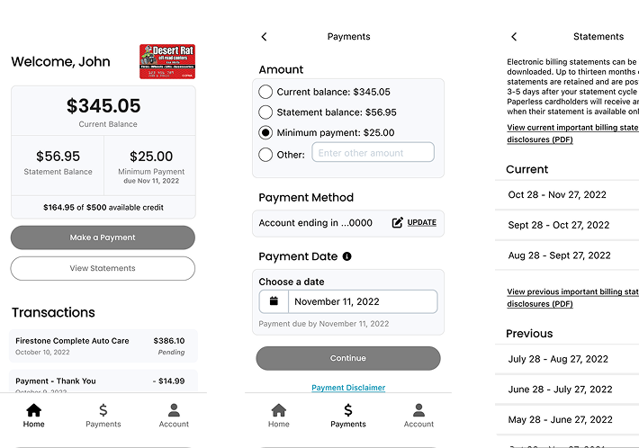
TEST
Moderated Usability Studies
Once screens reached higher fidelity I conducted a small round of usability studies. Due to the tight timeline and limited user pool we were only able to schedule three sessions, which produced inconclusive results. It was a frustrating outcome, but an honest one, and it reinforced something I believe strongly: constrained research is still better than no research. Even with limited sessions we surfaced observations worth carrying into future iterations.
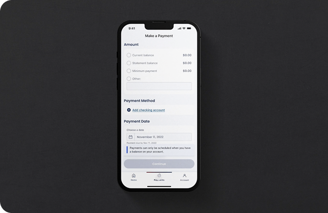
LAUNCH & BEYOND
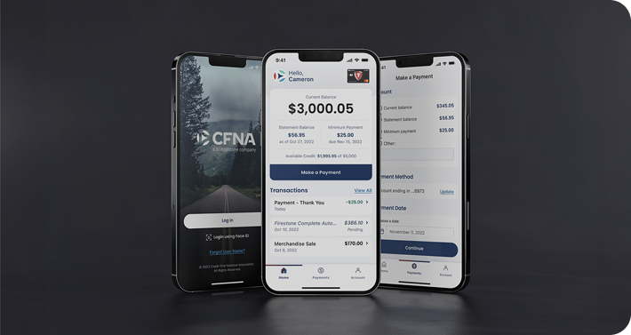
Scope Protection and Risk Mitigation
Two of the most impactful contributions I made on this project never showed up in a design file. I prevented scope creep on two major requirements, Rewards and Digital Wallet, by holding firm on what the research and prioritization exercise had defined as out of scope for the MVP. I also proactively raised ADA compliance awareness with the client, educating stakeholders on the risks of not building accessibly from the start.
Both of these moments required conviction and clear communication more than design skill. They protected the integrity of the product and the trust of the client.
Launch & Beyond
CFNA took approximately a year and a half after our engagement to launch their mobile app, a delay caused largely by the API risks my team surfaced during discovery. In the meantime they redirected resources toward improving their existing website while the necessary APIs were built out.
Knowing that our early discovery work directly influenced their roadmap and prevented a premature launch is a quiet but meaningful outcome of this project.
CLOSING
Backstage Hero
This project taught me that some of the most valuable UX work is invisible. Preventing scope creep, surfacing API risks before they become launch blockers, stepping into a PM role when the team needed it most — none of those things show up in a screen design. But all of them shaped the outcome.
I also learned that adapting quickly and asking better questions about the expectations around deliverables is a skill worth developing deliberately. This project accelerated that development more than almost any other in my career.